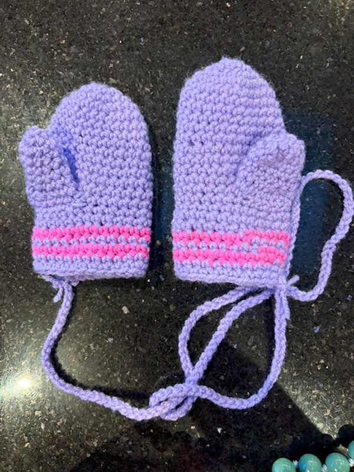
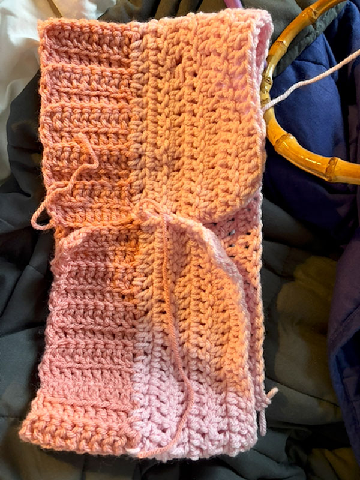
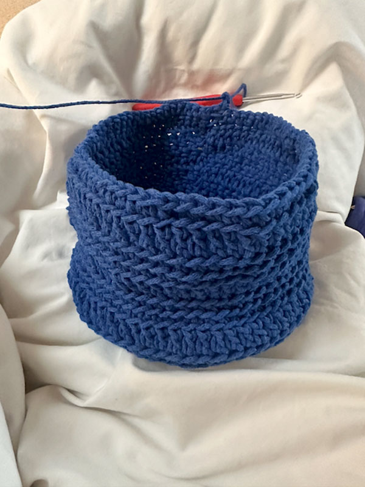
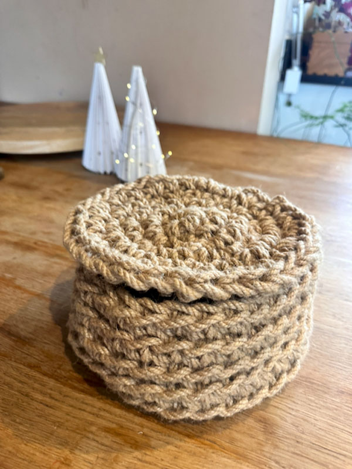
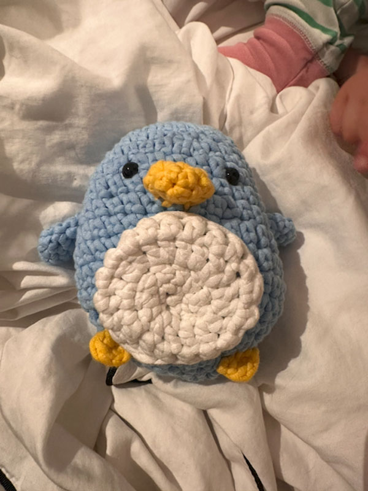

Hi. My name is Diya. Just wanted to share why I started this.
I think everyone I've met who's into craft uses it for different reasons. And that's what's beautiful about it. It can be whatever you need it to be at the time.
Mine is a fairly familiar story.
A mix of different illnesses. Mum guilt. Mental health wobbles. Being too bloody cold to go out in winter. Overthinking every single thing. Wanting to achieve everything all at once. The list goes on, right?
Last year I turned 40 and rather than celebrating in style on the day, I was being wheeled into emergency surgery first thing in the morning. I mean, don't get me wrong… it wasn't all bad. The anaesthetist was possibly the most beautiful man alive and the last face I saw before going under. Then I woke up to fentanyl… let's just say it was a very good distraction.
But jokes aside, it shook me.
I healed well. I came back stronger. On paper, everything was fine. But when you've had several surgeries — all unrelated, all rare, all completely out of the blue — it does something to your sense of control. And when you're juggling kids, work, ambition, the invisible mental load… control feels like the one thing you can't afford to lose.
Something had to change. I had to take a minute.


Around that time, I started crocheting with a group of friends (also mums). All of us with varying levels of experience. Most of us mostly wanting to justify drinking wine and being more Wholesome. (OK, mainly me.) Side note: I did not realise how many rude jokes you can make about crochet, knitting and stitching. Endless.
But the real takeaway? I hadn't laughed that hard in years.
And somewhere in the middle of the wine, the stitches and the swearing at dropped loops, something else was happening.
Craft became my pain relief. It regulated my mind. It gave me something small and steady to focus on.
When I crochet, I have to sit still. I can mess it up. I can pull it apart. I can start again. It can be wonky. And it's still fine.
That lesson hit harder than I expected.
I've always believed we don't actually need the solutions to our problems… women are superhumans and most of the time we already know how to solve it. We just need somewhere to put them for a while. Because there are about 1,292,840+ other things on our plate that need our immediate attention.


The Crafty Club Social is that place.
It's not about being good at craft.
It's not about perfection.
It's about sitting around a table, making something imperfect, laughing too loudly, and feeling connected in real life.
Everyone will use it differently. That's the point.

Some will come for the craft.
Some for the chat.
Some because they just need to get out of the house before they lose their minds.
If you leave feeling lighter than when you arrived, then we've done it right.
It's not a polished wellness experience.
It's just women sitting together, making things, taking a minute.
I look forward to meeting you all.
D x